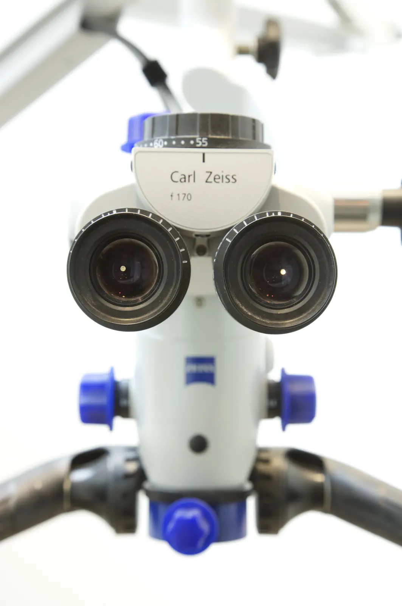

Endodontie
Soigner l’intérieur de la dent pour la conserver, plutôt que de la remplacer.
Dr Sandrine DahanEndodontie
Qu’est-ce que l’endodontie ?
L’endodontie soigne la pulpe, le tissu vivant situé au cœur de la dent, qui contient les nerfs et les vaisseaux.
Quand la pulpe est enflammée ou infectée, à la suite d’une carie profonde, d’une fracture ou d’un choc, le traitement de canal permet de garder la dent. Sans traitement, l’infection peut gagner l’os autour de la racine et provoquer un abcès.
Le traitement de canal, étape par étape
Choisissez une étape pour voir la partie de la dent concernée.
En savoir plus
Chaque traitement expliqué en détail.
- Le traitement de canal Quand il est nécessaire, comment il se déroule et ce qui se passe ensuite. En savoir plus
- Le retraitement Refaire un ancien traitement de canal lorsque l’infection persiste ou réapparaît. En savoir plus
- La chirurgie endodontique Traiter l’infection par l’extrémité de la racine, quand le retraitement n’est pas possible. En savoir plus

Votre praticienne
Dr Sandrine Dahan
- Endodontie
Le cabinet dispose d’un microscope opératoire, utilisé pour les traitements de canal. Le grossissement et l’éclairage aident à repérer des canaux très fins, à les nettoyer sur toute leur longueur et à contrôler chaque étape.
Questions fréquentes
Un traitement de canal est-il douloureux ?
En général non : il se fait sous anesthésie locale. Une sensibilité en mordant est possible pendant quelques jours après le traitement.
Combien de séances faut-il ?
Le plus souvent une ou deux. Une infection importante peut demander une séance supplémentaire.
Une dent dévitalisée est-elle plus fragile ?
Oui, en particulier les molaires et les prémolaires, qui ont souvent perdu beaucoup de tissu. Une couronne est alors souvent conseillée pour éviter une fracture.
Le traitement est-il remboursé ?
Le traitement de canal est un acte pris en charge par l’Assurance maladie. Le cabinet vous indique les conditions de remboursement avant le traitement.
Une douleur dentaire ?
Appelez le cabinet. Une douleur vive ou un gonflement justifient un rendez-vous rapide.